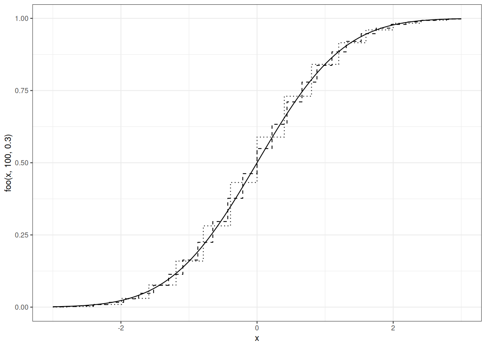
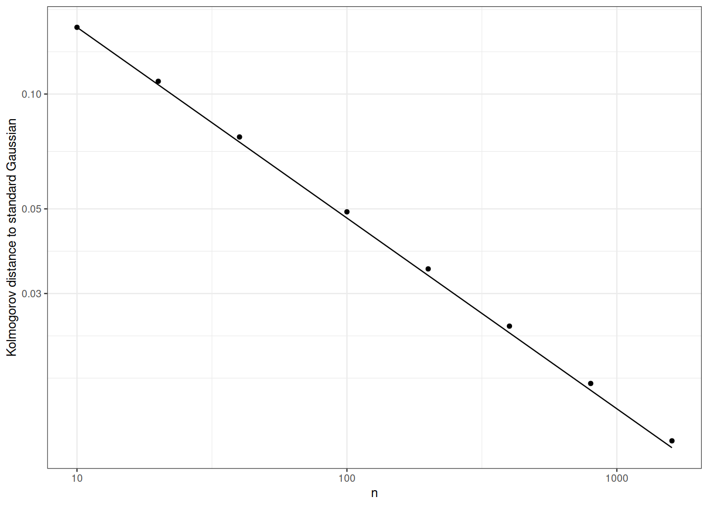

11 Refinments and extensions of thr Central Limit Theorem
11.1 Motivation
In Section 11.4), we associate convergence in distribution with metrics. By metrizing convergence in distribution, we can quantify rates of convergence.
In Section 11.5) we turn a relatively recent approach to weak convergence: Stein’s method. This is best illustrated with variations on the Central Limit Theorem. Recall that a byproduct of the proof that characteristic functions identify probability distributions was Stein’s identity.
11.2 Central limit theorem
Let \(X_1, \ldots, X_n, \ldots\) be i.i.d. with finite variance \(\sigma^2\) and expectation \(\mu\). Let \(S_n = \sum_{i=1}^n X_i\).
\[ \sqrt{n} \left(\frac{S_n}{n} - \mu \right) \rightsquigarrow \mathcal{N}\big(0, \sigma^2 \big) \, . \]
Proof. TODO
\(\square\)
11.3 Cramer-Wold device
The next theorem is a corollary of ?thm-thmLevyInj).
Theorem 11.1 (Cramer-Wold) The distribution of a \(\mathbb{R}^n\)-valued random vector \(X = (X_1, \ldots, X_n)^T\) is completely determined by the collection of distributions of univariate random variables \(\langle t, X\rangle =\sum_{i=1}^n t_i X_i\) where \((t_1, \ldots, t_n)^T\) belongs to \(\mathbb{R}^n.\)
11.4 Metrizations of weak convergence
When we talk about laws on complete separable metric spaces, convergence in distribution can be defined in relation to a distance. In fact, several distances are possible and you can choose any of them according to your needs. The distances we are interested in are of the form \[ \mathrm{d}_{\mathcal{H}}(P, Q) = \sup_{h \in \mathcal{H}} \int h \mathrm{d}P - \int h \mathrm{d}Q \] where \(\mathcal{H}\) is a well-chosen collection of measurable functions.
The Kolmogorov-Lévy metric is used implicitly in the formulation of Glivenko-Cantelli’s theorem, it is controlled in the inequality of Dvoretzky-Kiefer-Wolfowitz.
Definition 11.1 (Kolmogorov-Lévy distance) If \(W\) and \(Z\) are two real random variables, the Kolmogorov-Lévy distance between their distributions is defined by \[ \mathrm{d}_K(\mathcal{L}(W), \mathcal{L}(Z)) = \sup_{x \in \mathbb{R}} \left| \mathbb{P}\{ W \leq x\} - \mathbb{P}\{ Z \leq x\} \right| \, . \]
The fact that the Kolmogorov-Lévy distance metrizes the weak convergence towards a limiting distribution with a continuous cumulative distribution function is checked with the argument used in the classical proofs of Glivenko-Cantelli’s theorem.
If \(\lim_n x_n x_n = x\), the mass sequence \(\delta_{x_n}\) converges weakly towards the mass \(\delta_x\), however, if \(x_n \neq x\), \(\mathrm{d}_K(\delta_{x_n}, \delta_x)=1\).
To metrize weak convergence in general settings, we can use the Levy-Prokhorov distance:
\[ \inf \Big\{\epsilon : \epsilon >0, \qquad P(-\infty, x-\epsilon] -\epsilon \leq Q(-\infty, x] \leq P(-\infty, x-\epsilon] + \epsilon\Big\} \, . \]
The Kolmogorov-Lévy distance represents a relevant relaxation of the total variation distance (which does not metrize convergence in distribution). The fact that the test functions which define the Kolmogorov-Lévy distance are not absolutely continuous does not make life any easier. That is why we often work with a distance defined by more user-friendly functions. This distance belongs to the family of distances known as Monge-Wasserstein distances, or transportation distance.
11.4.1 Wasserstein distance
Let \(W\) and \(Z\) be \(\mathbb{R}^k\)-valued random variables with distributions \(\mathcal{L}(W)\), \[ \mathrm{d}_M(\mathcal{L}(W), \mathcal{L}(Z)) = \sup_{h: 1-\text{Lipschitz}} \left| \mathbb{E} h(W) - \mathbb{E} h(Z) \right| \, . \]
When we want to evaluate the distance with respect to an absolutely continuous distribution like the Gaussian distribution, the use of one metric over another is not very important.
Si \(P\) et \(Q\) sont deux lois sur \(\mathbb{R}\), et si \(Q\) possède une densité majorée par \(C\) vis-à-vis de la mesure de Lebesgue, alors
\[ \mathrm{d}_K(P,Q) \leq \sqrt{ 2 C \mathrm{d}_{M}(P,Q)} \, . \]
Proof. Pour \(x \in \mathbb{R}\), on note \(h_x = \mathbb{I}_{(-\infty,x]}\) et pour \(\epsilon>0\), on définit \(h_{x, \epsilon}\) par
\[ h_{x,\epsilon}(w) = \begin{cases} 1 & \text{si } x\geq w\\ 0 & \text{si } w> x + \epsilon \\ 1 - \frac{w-x}{\epsilon} & \text{si } x\leq w \leq x+ \epsilon \end{cases} \]
On note \(q\) la densité de \(Q\) par rapport à la mesure de Lebesgue. La fonction \(h_{x,\epsilon}\) est \(1/\epsilon\)-Lipschitz et elle approche \(h_x\). Si \(W \sim P\) et \(Z \sim Q\), \[\begin{align*} \mathbb{E} h_x(W) - \mathbb{E} h_x(Z) & = \underbrace{\mathbb{E} h_x(W) - \mathbb{E} h_{x,\epsilon} (Z)}_{\textsf{(i)}} + \underbrace{\mathbb{E} h_{x, \epsilon}(Z) - \mathbb{E} h_x(Z)}_{\textsf{(II)}} \,. \end{align*}\] On majore ensuite (simplement) les deux expressions et . \[\begin{align*} \textsf{(i)} & \leq \mathbb{E} h_{x,\epsilon} (W) - \mathbb{E} h_{x,\epsilon} (Z)\\ & \leq \frac{1}{\epsilon} \mathrm{d}_{M}(P,Q) \, \end{align*}\] et \[\begin{align*} \textsf{(ii)} & \leq \int_{x}^{x+\epsilon}\left(1 - \frac{w-x}{\epsilon} \right) q(z)\mathrm{d}z\\ & \leq C \frac{\epsilon}{2} \, . \end{align*}\] En choisissant \(\epsilon = \sqrt{2\mathrm{d}_{M}(P,Q)/C}\), et en optimisant le choix de \(x\), on obtient le résultat désiré.
\(\square\)
11.5 Stein’s method
In Stein’s approach, we are interested in the approximation of a target law (normal law, Fish, \(\chi^2_k\), ) by the law of a random variable whose mode of manufacturing (sum of independent random variables, order statistics, logarithm of likelihood ratio,…). The target law is characterized by an identity. In the case of of normal law, it’s Stein’s identity.
11.5.1 Stein’s Identity
Let the real random variable \(Z\) be distributed according to \(Q\). if for every absolutely continuous function \(f\) such that \(f'(Z)\) is \(Q\)-integrable, we have \[\mathbb{E}[Z f(Z)] = \mathbb{E}[f'(Z)]\] then \[Q = \mathcal{N}(0,1) \, .\] The converse is true.
Proof. See Lemma 12.1 and ?lem-steinslemma-bis.
This identity leads us to define an operator \(\mathcal{A}\) that acts on absolutely continuous functions: \(\mathcal{A} f(x) = f'(x) - x f(x)\). This operator allows us to characterize \(\mathcal{N}(0,1)\): \[ Q = \mathcal{N}(0,1) \Longleftrightarrow \forall f \text{a.c}\quad 0 = \int \mathcal{A}f(z) Q(\mathrm{d}z) \, . \]
Now, for function \(h \in \mathcal{H}\), si on peut définir \(f_h\) tel que \[\mathcal{A} f_h(w) = h(w) - \int h(z) \phi(z) \mathrm{d}z\, ,\] on a \[ \mathbb{E}_Q h(W) - \mathbb{E}_{\mathcal{N}(0,1)} h(Z) = \mathbb{E}_Q \mathcal{A} f_h(W) \, . \] In order to upper bound \(d_{\mathcal{H}}(Q, \mathcal{N}(0,1))\), it suffices to upper bound the following collection of expectations: \[ \mathbb{E}_Q \mathcal{A} f_h(W) \qquad\text{for} h \in \mathcal{H}, \text{ and } \mathcal{A} f_h(w) = h(w) - \int h(z) \phi(z) \mathrm{d}z \, . \] This last goal led to the development of creative methods for approximating integrals. In order to understand what is at stake, we have to investigate the smoothness and boundedness properties of functions \(\mathcal{A} f_h, h \in \mathcal{H}\), when \(\mathcal{H}\) itself is defined by smoothness constraints.
In the sequel, we abbreviate \(\int_{\mathbb{R}} h(z) \phi(z)\mathrm{d}z\) to \(\Phi(h)\).
Lemma 11.1 Let \(f_h\) be the solution of the differential equation \[ f'_h(w) - w f_h(w) = h(w) - \Phi(h)\, . \] given by \[ f_h(w) = \begin{cases} \mathrm{e}^{w^2/2} \int_w^\infty \mathrm{e}^{-t^2/2}(\Phi(h)-h(t)) \mathrm{d}t & \text{if } w \geq 0 \\ \mathrm{e}^{w^2/2} \int^w_{-\infty} \mathrm{e}^{- t^2/2} \left(h(t) -\Phi(h)\right) \mathrm{d}t & \text{if } w \leq 0 \,. \end{cases} \] If \(h\) is absolutely continuous then \(f_h\) is the only bounded solution of the differential equation and \[ \|f_h\|_\infty \leq 2 \|h'\|_\infty,\qquad \|f'_h\|_\infty \leq \sqrt{\frac{2}{\pi}}\|h'\|_\infty,\qquad\|f^{\prime\prime}_h\|_\infty \leq 2\|h'\|_\infty \, . \]
Proof. We first check that \(f_h\) is the unique bounded solution of the differential equation,
Note that adding a constant to \(h\) leaves \(h - \Phi(h)\) invariant. So we assume \(h(0)=0\). We have \(|h(w)| \leq \|h'\|_{\infty} |w|\).
For \(w>0\), observe \[ \mathrm{e}^{w^2/2} \int_w^{\infty} t \, \mathrm{e}^{-t^2/2} \mathrm{d}t = 1 \qquad \Phi(|h|) \leq \| h' \|_\infty \sqrt{\frac{2}{\pi}} \, . \] Function \(w \mapsto \mathrm{e}^{w^2/2}\) satisfies the differential equation. Now look for a bounded solution like \[ f(w) = g(w) \mathrm{e}^{w^2/2} \, . \] The differential equation reads \[ g'(w) = \mathrm{e}^{- w^2/2} \left(h(w) - \Phi(h)\right) \, . \] A solution is provied by function \[ g(w) = \begin{cases} \int_w^\infty \mathrm{e}^{- t^2/2} \left(\Phi(h) -h(t)\right) \mathrm{d}t & \text{if } w\geq 0 \\ \int^w_{-\infty} \mathrm{e}^{- t^2/2} \left(h(t) -\Phi(h)\right) \mathrm{d}t & \text{if } w\leq 0 \, . \end{cases} \] (integrability assumptions about \(h\) warrant that \(g\) is well-defined), hence \(f_h\) is a solution of the differential equation stated in Lemma Lemma 11.1
Besides, for \(w>0\) \[ f_h(w) = g(w) \mathrm{e}^{w^2/2} \leq \| h'\|_\infty \left(\sqrt{\frac{2}{\pi}}\frac{\overline{\Phi}(w)}{\phi(w)} +1 \right) \, , \] the ratio \(\frac{\overline{\Phi}(w)}{\phi(w)}\) is non-increasing over \([0, \infty)\), it is always smaller than \(\sqrt{\frac{\pi}{2}}\). The boundedness of \(f_h\) follows: \[ \| f_h \|_\infty \leq 2 \|h'\|_\infty \, . \] The other solutions of the differential equation are \(f_h + c \mathrm{e}^{w^2/2}\). They are not bounded.
Les us now bound the first and second derivatives of \(f_h\).
We first check \[\begin{align*} h(w) - \Phi(h) & = \int_{-\infty}^w h'(t) \Phi(t) \mathrm{d}t - \int_w^\infty h'(t) \overline{\Phi}(t) \mathrm{d}t \,. \end{align*}\] Plugging into the definition de \(f_h\), we get : \[\begin{align*} f_h(w) & = - \sqrt{2\pi} \mathrm{e}^{w^2/2} (1-\Phi(w)) \int_{-\infty}^w h'(t) \Phi(t) \mathrm{d}t \\ & \phantom{=} - \sqrt{2\pi} \mathrm{e}^{w^2/2} \Phi(w) \int_w^{\infty} h'(t) (1-\Phi(t)) \mathrm{d}t \end{align*}\]
\[\begin{align*} f'_h(w) & = w f_h(w) + h(w) -\Phi(h) \\ & = (1 - \sqrt{2\pi} \mathrm{e}^{w^2/2} (1-\Phi(w)))\int_{-\infty}^w h'(t) \Phi(t) \mathrm{d}t \\ & \phantom{=} - (1 + \sqrt{2\pi} \mathrm{e}^{w^2/2} \Phi(w)) \int_w^{\infty} h'(t) (1-\Phi(t)) \mathrm{d}t\\ \end{align*}\] hence \[\begin{align*} |f'_h(w)| & \leq \|h'\|_\infty \sup_{w \in \mathbb{R}} \Big(|1 - \sqrt{2\pi} \mathrm{e}^{w^2/2} (1-\Phi(w))|\int_{\infty}^w \Phi(t) \mathrm{d}t \Big. \\ & \phantom{\leq \|h'\|_\infty \sup_{w \in \mathbb{R}} \Big( \Big.)} \Big. |1 + \sqrt{2\pi} \mathrm{e}^{w^2/2} \Phi(w)| \int_w^{\infty} (1-\Phi(t))\Big) \end{align*}\] To complete the upper bound on \(\|f'_h\|_\infty\), it suffices to bound the supremum as \(w\) varies.
To establish existence and boundedness of the second derivative, we differentiate \(f'_h(w) = w f_h(w) + h(w) -\Phi(h)\) to get \[\begin{align*} f^{\prime\prime}_h(w) & = f_h(w) + w f'_h(w) + h'(w) \\ & = (1+ w^2)f_h(w) + ww (h(w) - \Phi(h)) + h'(w) \, . \end{align*}\] On réutilise les calculs esquissés précédemment pour majorer \(\|f^{\prime\prime}_h\|_\infty\).
\(\square\)
Le fait que si \(h\) est \(1\)-Lipschitz, \(f_h\) soit deux fois dérivable et de dérivée seconde bounded is convenient lorsqu’il faut majorer \(\mathbb{E} \mathcal{A}f_h(W)\). La façon dont on peut tirer avantage de cette régularité dépend de ce qu’on sait sur la structure de \(W\). Le theorem suivant qui peut être vu comme une combinaison des theorems de Berry-Esseen et de Lindeberg-Feller, montre ce qui peut etre obtenu lorsque \(W\) est une somme de variables aléatoires indépendantes pas nécessairement identique distribuées, centrées et suffisamment intégrables.
11.6 A Berry-Esseen bound for a Lindeberg-Feller-like Central Limit Theorem
Le theorem suivant peut etre lu comme un résultat intermédiaire entre le theorem de Berry-Esseen ?thm-tcl-berry (il donne une distance à la loi normale) et le theorem central limite de Lindeberg-Feller ?thm-tcl-lindeberg (il traite de sommes de variables aléatoires indépendantes mais pas nécessairement identiquement distribuées). Les conditions utilisées ici sont plus fortes que celles décrites dans les deux theorems précédents. Dans le theorem de Lindeberg-Feller, la condition d’intégrabilité uniforme est minimale. Dans l’énoncé du theorem de Berry-Esseen, on se contente de postuler que les summands have a finite third moment. Ici on suppose un peu plus: les summands ont un kurtosis bounded.
Rappelons que le kurtosis d’une loi est défini par \[ \frac{\mathbb{E}[(X -\mathbb{E}X)^4]}{(\mathbb{E}[(X -\mathbb{E}X)^2])^2} \, . \]
The kurtosis of Gausian est toujours égal à \(3\). Pour les lois Gamma, le kurtosis ne dépend que du paramètre de forme \(p\) (il vaut \(3+ 6/p\)).
Soient \(X_1, \ldots, X_n\) des variables aléatoires indépendantes centrées, de kurtosis majoré par \(\kappa\). On définit \(\sigma^2 = \sum_{i=1}^n \operatorname{var}\left(X_i\right)\) et \(W = \sum_{i=1}^n X_i / \sigma\). \[ \mathrm{d}_M(\mathcal{L}(W), \mathcal{N}(0, 1)) \leq \sqrt{\frac{2}{\pi}} \left(\frac{1}{\sigma^3} \sum_{i=1}^n \mathbb{E}|X_i|^3 + \sqrt{\kappa \sum_{i=1}^n \frac{\operatorname{var}(X_i)^2}{\left(\sum_{i=1}^n \operatorname{var}(X_i)\right)^2}} \right) \, . \]
Proof (Proof of ?thm-lindeberg-feller-stein). Dans la preuve \(h\) est une fonction \(1\)-Lipschitzienne, \(f\) la solution bounded \(\mathcal{A} f = h - \Phi(h)\). Pour majorer \(\mathbb{E} h(W) - \Phi(h)\), on va majorer \(|\mathbb{E} [f'_h(W) -W f(W)]|\).
Dans la suite, pour \(i \in 1, \ldots, n\), \(W_i = \sum_{j\neq i} X_j/\sigma\).
Observe first that as \(W_i\) and \(X_i\) are independent and centered \[ \mathbb{E}[X_i f(W_i)] = 0 \, . \]
\[\begin{align*} \mathbb{E}[W f(W)] & = \mathbb{E}\left[ \frac{1}{\sigma}\sum_{i=1}^n X_i f(W)\right] \\ & = \mathbb{E}\left[ \frac{1}{\sigma}\sum_{i=1}^n (X_i f(W) - X_i f(W_i))\right] \\ & = \mathbb{E}\left[ \frac{1}{\sigma}\sum_{i=1}^n X_i (f(W)- f(W_i))\right] \, . \end{align*}\] In the sequel, we will rely on \[\begin{align*} \mathbb{E}[W f(W)] & = \mathbb{E}\left[ \frac{1}{\sigma}\sum_{i=1}^n X_i (f(W)- f(W_i) - (W- W_i) f'(W)) \right] \\ & \phantom{====} + \mathbb{E}\left[ \frac{1}{\sigma}\sum_{i=1}^n X_i ((W- W_i) f'(W)) \right] \, . \end{align*}\]
\[\begin{align*} \left| \mathbb{E}[f'(W) - W f(W)]\right| & \leq \underbrace{\left| \mathbb{E}\left[ \frac{1}{\sigma}\sum_{i=1}^n X_i (f(W)- f(W_i) - (W- W_i) f'(W)) \right] \right|}_{\textsf{(i)}}\\ & \phantom{====} + \underbrace{\left|\mathbb{E}\left[ \left( 1-\frac{1}{\sigma}\sum_{i=1}^n X_i (W- W_i)\right) f'(W) \right] \right|}_{\textsf{(i)}} \, . \end{align*}\]
To upper bound , l’inégalité des accroissements finis suffit \[\begin{align*} \textsf{(i)} & \leq \mathbb{E}\left[ \frac{1}{\sigma}\sum_{i=1}^n |X_i| \left|f(W)- f(W_i) - (W- W_i) f'(W)\right| \right] \\ & \leq \frac{1}{\sigma}\sum_{i=1}^n\mathbb{E}\left[ |X_i| \frac{|X_i|^2}{\sigma^2} \| f^{\prime\prime}\|_\infty \right] \\ & \leq {\| f^{\prime\prime}\|_\infty}\frac{\sum_{i=1}^n\mathbb{E} |X_i|^3 }{\sigma^3} \, . \end{align*}\] Pour majorer , on utilise Cauchy-Schwarz et l’hypothèse de kurtosis. \[\begin{align*} \textsf{(ii)} & \leq \mathbb{E}\left[ \left|\left( 1-\frac{1}{\sigma^2}\sum_{i=1}^n X^2_i \right)\right| \left|f'(W)\right| \right] \\ & \leq \|f'\|_\infty \mathbb{E}\left[ \left|\left( 1-\frac{1}{\sigma^2}\sum_{i=1}^n X^2_i \right)\right|\right] \\ & \leq \|f'\|_\infty \frac{1}{\sigma^2} \left(\sum_{i=1}^n \operatorname{var}(X_i^2)\right)^{1/2} \\ & \leq \|f'\|_\infty \frac{1}{\sigma^2} \left(\kappa \sum_{i=1}^n \operatorname{var}(X_i)^2\right)^{1/2} \\ & \leq \|f'\|_\infty \left(\kappa \sum_{i=1}^n \left( \frac{\operatorname{var}(X_i)}{\sum_{i=1}^n \operatorname{var}(X_i)} \right)^2\right)^{1/2} \end{align*}\]
\(\square\)
En utilisant le fait que pour \(X\) centrée, de kurtosis \(\kappa\) \[ \mathbb{E} |X_i|^3 \leq (\mathbb{E} |X_i|^4)^{3/4} \leq \kappa^{3/4} (\mathbb{E} |X_i|^2)^{3/2} \, , \]
le membre droit du majorant peut se majorer lui même en \[ \kappa^{3/4} \|f^{\prime\prime}\|_\infty\left(\sum_{i=1}^n \left(\frac{\operatorname{var}(X_i)}{\sum_{j=1}^n \operatorname{var}(X_j)}\right)^{3/2}\right) + \kappa^{1/2} \|f'\|_\infty \left( \sum_{i=1}^n \left( \frac{\operatorname{var}(X_i)}{\sum_{i=1}^n \operatorname{var}(X_i)} \right)^2\right)^{1/2} \]
Si les \(X_i\) sont identiquement distribuées, alors le majorant du theorem s’écrit \[ \sqrt{\frac{2}{\pi}} \frac{1}{\sqrt{n}} \left( \kappa^{3/4} + \kappa^{1/2} \right) \, . \]

11.7 Bibliographic remarks
La possibilité de métriser la convergence en distribution (et la convergence en probabilité) est traitée avec beaucoup de rigueur et de clarté dans (Dudley, 2002).
Stein’s method pour établir des versions précises et générales du theorem central limite est décrite dans (Ross, 2011).
A thorough yet readable treatment of Stein’s method is (Chen, Goldstein, & Shao, 2011).
[Section ]) follows the first pages of (Ross, 2011)
La démonstration complète du ?lem-regu-stein} se trouve dans (Chen et al., 2011).
Chen, L. H. Y., Goldstein, L., & Shao, Q.-M. (2011). Normal approximation by Stein’s method (p. xii+405). Springer, Heidelberg. https://doi.org/10.1007/978-3-642-15007-4
Dudley, R. M. (2002). Real analysis and probability (Vol. 74, p. x+555). Cambridge: Cambridge University Press.
Ross, N. (2011). Fundamentals of Stein’s method. ArXiv e-Prints. Retrieved from https://arxiv.org/abs/1109.1880